Train and test an autoencoder on a set of 1D monitoring elements
This notebook walks you through the basics of the autoencoder approach to detecting anomalies for 1D monitoring elements.
It consists of the following steps:
- Loading the data
- Applying selections (e.g. DCS-bit on and sufficient statistics)
- Preprocessing (e.g. normalizing)
- Building an autoencoder model with keras
- Investigate the output
### imports
# external modules
import sys
import os
import numpy as np
import matplotlib.pyplot as plt
from keras import backend as K
import tensorflow as tf
from tensorflow.keras.models import load_model
# local modules
sys.path.append('../utils')
import dataframe_utils as dfu
import hist_utils as hu
import autoencoder_utils as aeu
import plot_utils as pu
import generate_data_utils as gdu
sys.path.append('../src')
import DataLoader
2022-07-26 17:21:47.396941: W tensorflow/stream_executor/platform/default/dso_loader.cc:64] Could not load dynamic library 'libcudart.so.11.0'; dlerror: libcudart.so.11.0: cannot open shared object file: No such file or directory; LD_LIBRARY_PATH: /cvmfs/sft.cern.ch/lcg/releases/MCGenerators/thepeg/2.2.1-8d929/x86_64-centos7-gcc8-opt/lib/ThePEG:/cvmfs/sft.cern.ch/lcg/releases/MCGenerators/herwig++/7.2.1-f3599/x86_64-centos7-gcc8-opt/lib/Herwig:/cvmfs/sft.cern.ch/lcg/views/LCG_101swan/x86_64-centos7-gcc8-opt/lib/python3.9/site-packages/torch/lib:/cvmfs/sft.cern.ch/lcg/views/LCG_101swan/x86_64-centos7-gcc8-opt/lib/python3.9/site-packages/tensorflow:/cvmfs/sft.cern.ch/lcg/views/LCG_101swan/x86_64-centos7-gcc8-opt/lib/python3.9/site-packages/tensorflow/contrib/tensor_forest:/cvmfs/sft.cern.ch/lcg/views/LCG_101swan/x86_64-centos7-gcc8-opt/lib/python3.9/site-packages/tensorflow/python/framework:/cvmfs/sft.cern.ch/lcg/releases/java/8u222-884d8/x86_64-centos7-gcc8-opt/jre/lib/amd64:/cvmfs/sft.cern.ch/lcg/views/LCG_101swan/x86_64-centos7-gcc8-opt/lib64:/cvmfs/sft.cern.ch/lcg/views/LCG_101swan/x86_64-centos7-gcc8-opt/lib:/cvmfs/sft.cern.ch/lcg/releases/gcc/8.3.0-cebb0/x86_64-centos7/lib:/cvmfs/sft.cern.ch/lcg/releases/gcc/8.3.0-cebb0/x86_64-centos7/lib64:/cvmfs/sft.cern.ch/lcg/releases/binutils/2.30-e5b21/x86_64-centos7/lib:/usr/local/lib/:/cvmfs/sft.cern.ch/lcg/releases/R/3.6.3-dfb24/x86_64-centos7-gcc8-opt/lib64/R/library/readr/rcon
2022-07-26 17:21:47.397006: I tensorflow/stream_executor/cuda/cudart_stub.cc:29] Ignore above cudart dlerror if you do not have a GPU set up on your machine.
### read the data
# note: this cell assumes you have a csv file stored at the specified location,
# containing only histograms of the specified type;
# see the tutorial read_and_write_data for examples on how to create such files!
histname = 'chargeInner_PXLayer_2'
filename = 'DF2017_'+histname+'.csv'
datadir = '../data'
dloader = DataLoader.DataLoader()
df = dloader.get_dataframe_from_file( os.path.join(datadir, filename) )
print('raw input data shape: {}'.format( dfu.get_hist_values(df)[0].shape ))
INFO in DataLoader.get_dataframe_from_file: loading dataframe from file ../data/DF2017_chargeInner_PXLayer_2.csv...
INFO in DataLoader.get_dataframe_from_file: sorting the dataframe...
INFO in DataLoader.get_dataframe_from_file: loaded a dataframe with 225954 rows and 16 columns.
raw input data shape: (225954, 102)
### filtering: select only DCS-bit on data and filter out low statistics
df = dfu.select_dcson(df)
print('number of passing lumisections after DCS selection: {}'.format( len(df) ))
df = dfu.select_highstat(df, entries_to_bins_ratio=100)
print('number of passing lumisections after high statistics selection: {}'.format( len(df) ))
number of passing lumisections after DCS selection: 215144
number of passing lumisections after high statistics selection: 211371
### preprocessing of the data: rebinning and normalizing
rebinningfactor = 1
X_train = hu.preparedatafromdf(df, rebinningfactor=rebinningfactor,
donormalize=True, doplot=True)
(ntrain,nbins) = X_train.shape
print('size of training set: '+str(X_train.shape))
size of training set: (211371, 102)
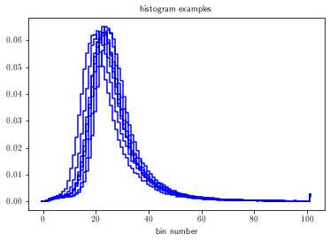
### build the model and train it
input_size = X_train.shape[1]
arch = [int(X_train.shape[1]/2.)]
act = ['tanh']*len(arch)
opt = 'adam'
loss = aeu.mseTop10
autoencoder = aeu.getautoencoder(input_size,arch,act,opt,loss)
history = autoencoder.fit(X_train, X_train, epochs=20, batch_size=500, shuffle=False, verbose=1, validation_split=0.1)
pu.plot_loss(history, title = 'model loss')
2022-07-26 17:22:34.789066: W tensorflow/stream_executor/platform/default/dso_loader.cc:64] Could not load dynamic library 'libcuda.so.1'; dlerror: libcuda.so.1: cannot open shared object file: No such file or directory; LD_LIBRARY_PATH: /cvmfs/sft.cern.ch/lcg/releases/MCGenerators/thepeg/2.2.1-8d929/x86_64-centos7-gcc8-opt/lib/ThePEG:/cvmfs/sft.cern.ch/lcg/releases/MCGenerators/herwig++/7.2.1-f3599/x86_64-centos7-gcc8-opt/lib/Herwig:/cvmfs/sft.cern.ch/lcg/views/LCG_101swan/x86_64-centos7-gcc8-opt/lib/python3.9/site-packages/torch/lib:/cvmfs/sft.cern.ch/lcg/views/LCG_101swan/x86_64-centos7-gcc8-opt/lib/python3.9/site-packages/tensorflow:/cvmfs/sft.cern.ch/lcg/views/LCG_101swan/x86_64-centos7-gcc8-opt/lib/python3.9/site-packages/tensorflow/contrib/tensor_forest:/cvmfs/sft.cern.ch/lcg/views/LCG_101swan/x86_64-centos7-gcc8-opt/lib/python3.9/site-packages/tensorflow/python/framework:/cvmfs/sft.cern.ch/lcg/releases/java/8u222-884d8/x86_64-centos7-gcc8-opt/jre/lib/amd64:/cvmfs/sft.cern.ch/lcg/views/LCG_101swan/x86_64-centos7-gcc8-opt/lib64:/cvmfs/sft.cern.ch/lcg/views/LCG_101swan/x86_64-centos7-gcc8-opt/lib:/cvmfs/sft.cern.ch/lcg/releases/gcc/8.3.0-cebb0/x86_64-centos7/lib:/cvmfs/sft.cern.ch/lcg/releases/gcc/8.3.0-cebb0/x86_64-centos7/lib64:/cvmfs/sft.cern.ch/lcg/releases/binutils/2.30-e5b21/x86_64-centos7/lib:/usr/local/lib/:/cvmfs/sft.cern.ch/lcg/releases/R/3.6.3-dfb24/x86_64-centos7-gcc8-opt/lib64/R/library/readr/rcon
2022-07-26 17:22:34.789185: W tensorflow/stream_executor/cuda/cuda_driver.cc:326] failed call to cuInit: UNKNOWN ERROR (303)
2022-07-26 17:22:34.789326: I tensorflow/stream_executor/cuda/cuda_diagnostics.cc:156] kernel driver does not appear to be running on this host (59ec73fb7463): /proc/driver/nvidia/version does not exist
2022-07-26 17:22:34.791360: I tensorflow/core/platform/cpu_feature_guard.cc:142] This TensorFlow binary is optimized with oneAPI Deep Neural Network Library (oneDNN) to use the following CPU instructions in performance-critical operations: AVX2 FMA
To enable them in other operations, rebuild TensorFlow with the appropriate compiler flags.
Model: "sequential"
_________________________________________________________________
Layer (type) Output Shape Param #
=================================================================
dense (Dense) (None, 51) 5253
_________________________________________________________________
dense_1 (Dense) (None, 102) 5304
=================================================================
Total params: 10,557
Trainable params: 10,557
Non-trainable params: 0
_________________________________________________________________
2022-07-26 17:22:35.219952: I tensorflow/compiler/mlir/mlir_graph_optimization_pass.cc:176] None of the MLIR Optimization Passes are enabled (registered 2)
2022-07-26 17:22:35.221458: I tensorflow/core/platform/profile_utils/cpu_utils.cc:114] CPU Frequency: 2399845000 Hz
Epoch 1/20
381/381 [==============================] - 4s 7ms/step - loss: 1.3303e-04 - val_loss: 1.8835e-05
Epoch 2/20
381/381 [==============================] - 3s 7ms/step - loss: 3.5243e-05 - val_loss: 8.5544e-06
Epoch 3/20
381/381 [==============================] - 3s 8ms/step - loss: 1.7558e-05 - val_loss: 4.2058e-06
Epoch 4/20
381/381 [==============================] - 3s 9ms/step - loss: 1.0271e-05 - val_loss: 2.6051e-06
Epoch 5/20
381/381 [==============================] - 3s 9ms/step - loss: 7.0206e-06 - val_loss: 1.8891e-06
Epoch 6/20
381/381 [==============================] - 3s 9ms/step - loss: 5.1686e-06 - val_loss: 1.5451e-06
Epoch 7/20
381/381 [==============================] - 3s 9ms/step - loss: 4.0133e-06 - val_loss: 1.4708e-06
Epoch 8/20
381/381 [==============================] - 4s 11ms/step - loss: 3.1906e-06 - val_loss: 1.3947e-06
Epoch 9/20
381/381 [==============================] - 4s 12ms/step - loss: 2.6316e-06 - val_loss: 1.3483e-06
Epoch 10/20
381/381 [==============================] - 4s 12ms/step - loss: 2.1945e-06 - val_loss: 1.2472e-06
Epoch 11/20
381/381 [==============================] - 5s 13ms/step - loss: 1.9028e-06 - val_loss: 1.1730e-06
Epoch 12/20
381/381 [==============================] - 5s 14ms/step - loss: 1.7457e-06 - val_loss: 1.1381e-06
Epoch 13/20
381/381 [==============================] - 5s 13ms/step - loss: 1.5103e-06 - val_loss: 1.1024e-06
Epoch 14/20
381/381 [==============================] - 5s 12ms/step - loss: 1.4419e-06 - val_loss: 9.9945e-07
Epoch 15/20
381/381 [==============================] - 5s 12ms/step - loss: 1.3293e-06 - val_loss: 9.4934e-07
Epoch 16/20
381/381 [==============================] - 6s 17ms/step - loss: 1.3654e-06 - val_loss: 9.3066e-07
Epoch 17/20
381/381 [==============================] - 6s 16ms/step - loss: 1.1381e-06 - val_loss: 8.6669e-07
Epoch 18/20
381/381 [==============================] - 6s 17ms/step - loss: 1.0834e-06 - val_loss: 7.9371e-07
Epoch 19/20
381/381 [==============================] - 7s 17ms/step - loss: 1.0866e-06 - val_loss: 7.6348e-07
Epoch 20/20
381/381 [==============================] - 6s 17ms/step - loss: 1.0285e-06 - val_loss: 7.3859e-07
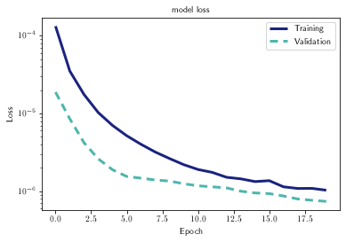
(<Figure size 432x288 with 1 Axes>,
<AxesSubplot:title={'center':'model loss'}, xlabel='Epoch', ylabel='Loss'>)
### evaluate the model on the training set
prediction_train = autoencoder.predict(X_train)
mse_train = aeu.mseTop10Raw(X_train, prediction_train)
### plot the global MSE trend
pu.plot_mse(mse_train, rmlargest=0.005)
(mean,std) = pu.plot_mse(mse_train, doplot=False, rmlargest=0.005)
print('mean mse: {}'.format(mean))
print('std mse: {}'.format(std))
/cvmfs/sft.cern.ch/lcg/views/LCG_101swan/x86_64-centos7-gcc8-opt/lib/python3.9/site-packages/IPython/core/pylabtools.py:134: UserWarning: Creating legend with loc="best" can be slow with large amounts of data.
fig.canvas.print_figure(bytes_io, **kw)
/cvmfs/sft.cern.ch/lcg/views/LCG_101swan/x86_64-centos7-gcc8-opt/lib/python3.9/site-packages/IPython/core/pylabtools.py:134: UserWarning: Creating legend with loc="best" can be slow with large amounts of data.
fig.canvas.print_figure(bytes_io, **kw)
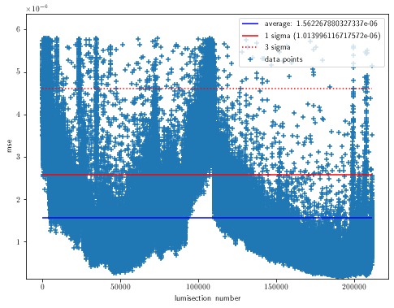
mean mse: 1.562267880327337e-06
std mse: 1.013996116717572e-06
### impose a mse upper boundary and plot random examples of passing and failing histograms
# note: at this point, only the training set is considered!
# for a test set: see cell below.
cutvalue = mean + 3*std
print('The mse threshold is: '+str(cutvalue))
goodindices = np.arange(0,len(mse_train))[mse_train<cutvalue]
badindices = np.arange(0,len(mse_train))[mse_train>cutvalue]
print('Number of passing histograms: '+str(len(goodindices)))
print('Number of failing histograms: '+str(len(badindices)))
nplot = 5
print('examples of good histograms and reconstruction:')
randint = np.random.choice(goodindices,size=nplot,replace=False)
for i in randint:
histlist = [X_train[int(i),:],prediction_train[int(i),:]]
labellist = ['data','reconstruction']
colorlist = ['black','blue']
pu.plot_hists(histlist,colorlist=colorlist,labellist=labellist)
plt.show()
print('examples of bad histograms and reconstruction:')
randint = np.random.choice(badindices,size=nplot,replace=False)
for i in randint:
histlist = [X_train[int(i),:],prediction_train[int(i),:]]
labellist = ['data','reconstruction']
colorlist = ['black','blue']
pu.plot_hists(histlist,colorlist=colorlist,labellist=labellist)
plt.show()
The mse threshold is: 4.6042562304800525e-06
Number of passing histograms: 207175
Number of failing histograms: 4196
examples of good histograms and reconstruction:
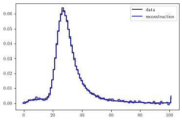
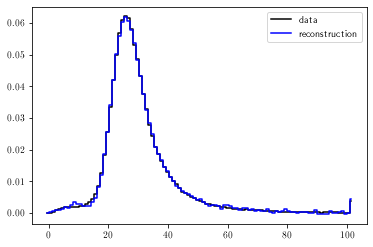
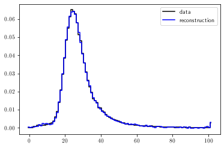
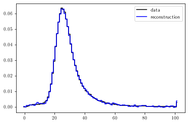
examples of bad histograms and reconstruction:
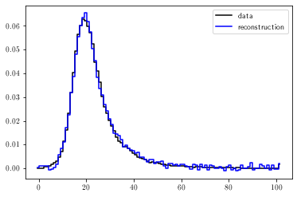
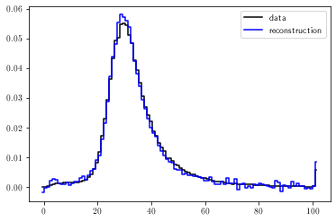
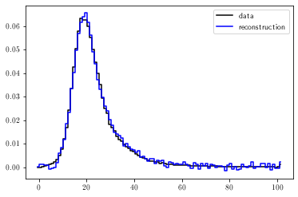
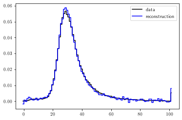
### get a test set and evaluate the model
goodrunsls = { "297056":[[-1]],
"297177":[[-1]],
"301449":[[-1]]
}
badrunsls = {
"297287":[[-1]],
"297288":[[-1]],
"297289":[[-1]],
"299316":[[-1]],
"299317":[[-1]],
"299318":[[-1]],
"299324":[[-1]],
}
# re-read the dataframe
# (in case the selections are different than for the training set)
dloader = DataLoader.DataLoader()
df = dloader.get_dataframe_from_file( os.path.join(datadir, filename) )
df = dfu.select_dcson(df)
df = dfu.select_highstat(df,entries_to_bins_ratio=100)
# good histograms option 1: predefined runs/lumisections
#X_test_good = hu.preparedatafromdf( dfu.select_runsls(df,goodrunsls),donormalize=True )
# good histograms option 2: averages of total set
X_test_good = hu.averagehists( hu.preparedatafromdf(df, donormalize=True), 15 )
# bad histograms: predefined runs/lumisections
(X_test_bad, runnbs_bad,lsnbs_bad) = hu.preparedatafromdf(
dfu.select_runsls(df,badrunsls),
donormalize=True,
returnrunls = True )
print('shape of good test set: {}'.format(X_test_good.shape))
print('shape of bad test set: {}'.format(X_test_bad.shape))
pu.plot_sets([X_test_good,X_test_bad],colorlist=['b','r'],
labellist=['Histograms in test set labeled "good"','Histograms in test set labeled "bad"'])
plt.show()
prediction_test_good = autoencoder.predict(X_test_good)
mse_test_good = aeu.mseTopNRaw(X_test_good, prediction_test_good, n=10 )
prediction_test_bad = autoencoder.predict(X_test_bad)
mse_test_bad = aeu.mseTopNRaw(X_test_bad, prediction_test_bad, n=10 )
print('average mse on good set: '+str(np.mean(mse_test_good)))
print('average mse on bad set: '+str(np.mean(mse_test_bad)))
nplot = 10
print('examples of good histograms and reconstruction:')
randint = np.random.choice(np.arange(len(X_test_good)),size=nplot,replace=False)
for i in randint:
histlist = [X_test_good[int(i),:],prediction_test_good[int(i),:]]
labellist = ['data','reconstruction']
colorlist = ['black','blue']
pu.plot_hists(histlist,colorlist=colorlist,labellist=labellist)
plt.show()
print('examples of bad histograms and reconstruction:')
randint = np.random.choice(np.arange(len(X_test_bad)),size=nplot,replace=False)
for i in randint:
histlist = [X_test_bad[int(i),:],prediction_test_bad[int(i),:]]
labellist = ['data','reconstruction']
colorlist = ['black','blue']
pu.plot_hists(histlist,colorlist=colorlist,labellist=labellist)
plt.show()
INFO in DataLoader.get_dataframe_from_file: loading dataframe from file ../data/DF2017_chargeInner_PXLayer_2.csv...
INFO in DataLoader.get_dataframe_from_file: sorting the dataframe...
INFO in DataLoader.get_dataframe_from_file: loaded a dataframe with 225954 rows and 16 columns.
shape of good test set: (15, 102)
shape of bad test set: (178, 102)
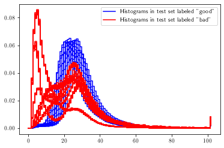
average mse on good set: 9.394014806693854e-07
average mse on bad set: 2.8245170411831176e-05
examples of good histograms and reconstruction:
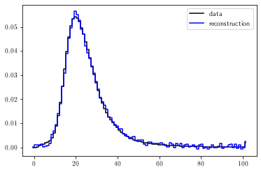
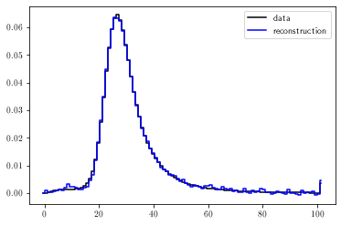
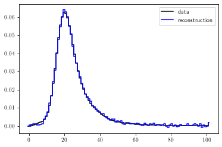
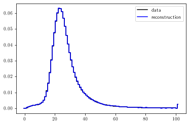
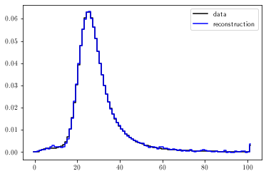
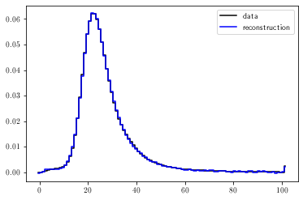
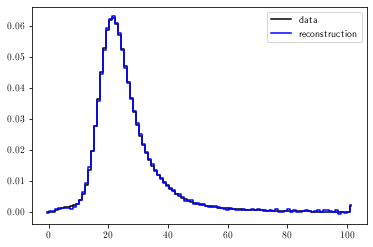
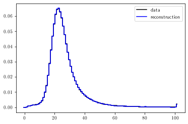
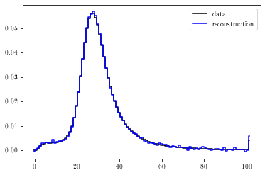
examples of bad histograms and reconstruction:
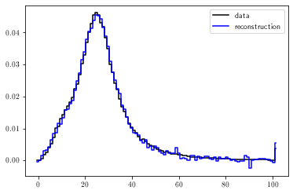
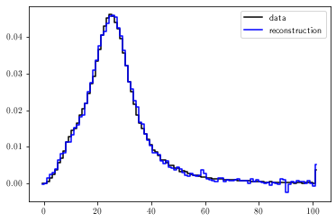
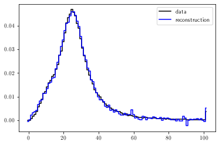
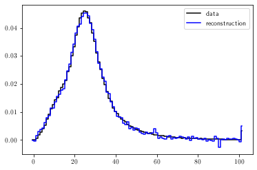
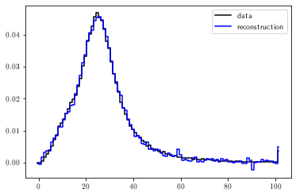
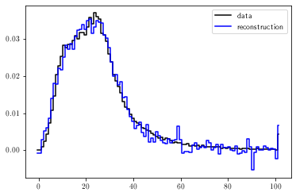

### use artificial data to assess the model performance
(goodhists,_,_) = gdu.upsample_hist_set( X_test_good, ntarget=5e3, fourierstdfactor=20., doplot=True )
(badhists,_,_) = gdu.upsample_hist_set( X_test_bad, ntarget=5e3, fourierstdfactor=20., doplot=True )
print('number of good histograms: '+str(len(goodhists)))
print('number of bad histograms: '+str(len(badhists)))
validation_data = np.vstack((goodhists,badhists))
labels = np.hstack((np.zeros(len(goodhists)),np.ones(len(badhists))))
prediction = autoencoder.predict(validation_data)
mse = aeu.mseTopNRaw(validation_data, prediction, n=10 )
shuffled_indices = np.arange(len(validation_data))
_ = np.random.shuffle(shuffled_indices)
validation_data = validation_data[shuffled_indices]
labels = labels[shuffled_indices]
prediction = prediction[shuffled_indices]
mse = mse[shuffled_indices]
# distribution of output scores
pu.plot_score_dist(mse, labels,
siglabel='anomalous', sigcolor='r',
bcklabel='good', bckcolor='g',
nbins=200, normalize=True)
print('minimum mse on bad set: {}'.format(np.amin(mse[np.where(labels==1)])))
print('maximum mse on good set: {}'.format(np.amax(mse[np.where(labels==0)])))
# classical ROC curve: signal efficiency (good data marked as good) vs background efficiency (bad data marked as good)
auc = aeu.get_roc(mse, labels, npoints=500, bootstrap_samples=100)
number of good histograms: 4995
number of bad histograms: 4984
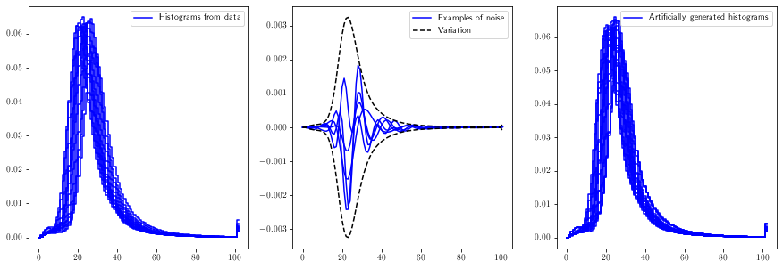
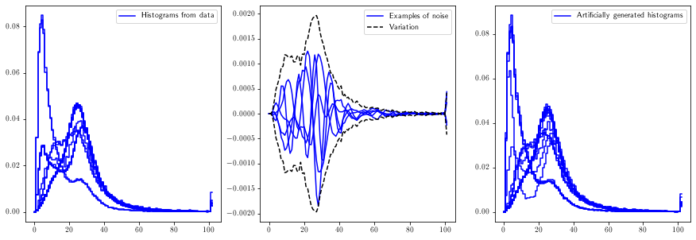
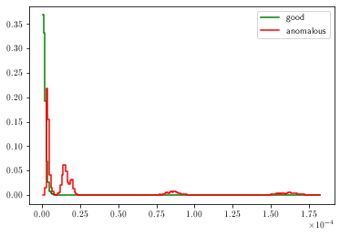
minimum mse on bad set: 2.3218854381344123e-06
maximum mse on good set: 8.690468927991255e-06
calculating ROC curve on 100 bootstrap samples of size 9979
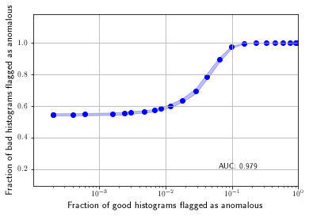
### continution of previous cell: choose wp and plot confusion matrix
aeu.get_confusion_matrix_from_hists( validation_data, labels, prediction, msewp='maxauc' )
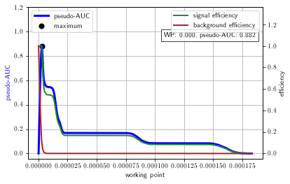
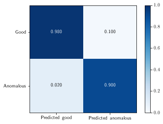
### plot some histograms in the bad test set with their reconstruction
inds = np.random.choice( np.arange(len(lsnbs_bad)), 10, replace=False )
for i in inds:
runnb = runnbs_bad[i]
lsnb = lsnbs_bad[i]
histogram = X_test_bad[i:i+1,:]
reco = autoencoder.predict(histogram)
mse = aeu.mseTopNRaw(histogram, reco, n=10 )
pu.plot_sets([histogram,reco],
labellist=['hist {}/{}'.format(runnb,lsnb),'reco'],
colorlist=['black','red'],
)
plt.show()
print('MSE: {}'.format(mse))
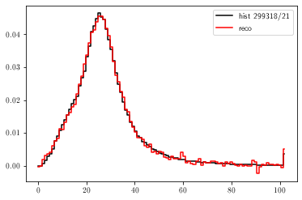
MSE: [3.0169114e-06]
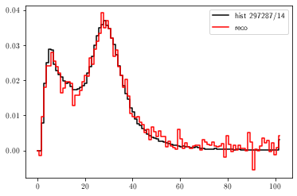
MSE: [1.96651261e-05]
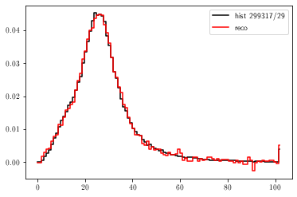
MSE: [3.39562765e-06]
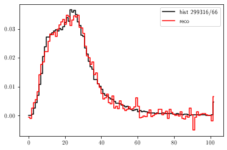
MSE: [1.45044959e-05]
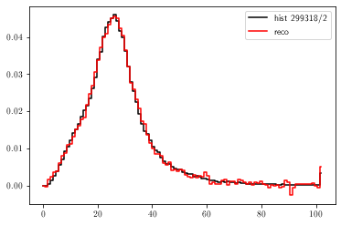
MSE: [3.05993993e-06]
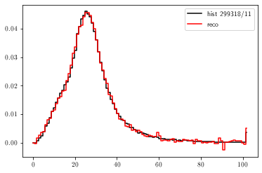
MSE: [3.27946765e-06]
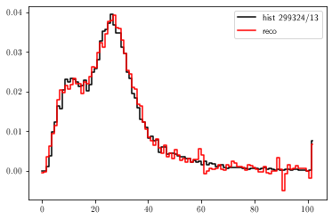
MSE: [1.25162146e-05]
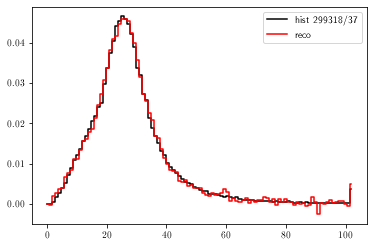
MSE: [4.071005e-06]
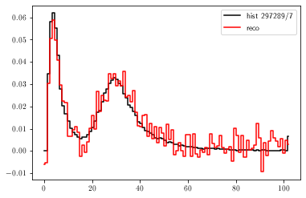
MSE: [8.70430108e-05]
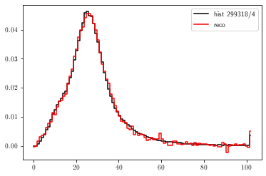
MSE: [3.24063155e-06]
### plot some histograms in the good test set with their reconstruction
# note: depends on whether the good test set was obtained from real lumisections,
# or from averages from entire set.
inds = np.random.choice( np.arange(len(X_test_good)), 10, replace=False )
for i in inds:
try:
runnb = runnbs_good[i]
lsnb = lsnbs_good[i]
histlabel = 'hist {}/{}'.format(runnb,lsnb)
except:
runnb = 0
lsnb = 0
histlabel = 'hist (artificial)'
histogram = X_test_good[i:i+1,:]
reco = autoencoder.predict(histogram)
mse = aeu.mseTopNRaw(histogram, reco, n=10 )
pu.plot_sets([histogram,reco],
labellist=[histlabel,'reco'],
colorlist=['black','red'],
)
plt.show()
print('MSE: {}'.format(mse))
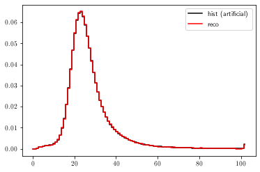
MSE: [1.26397457e-07]
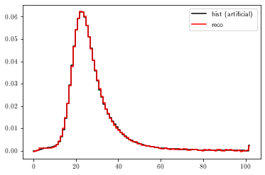
MSE: [2.5634339e-07]
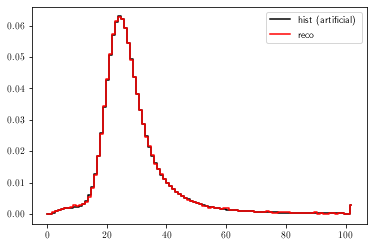
MSE: [1.93309463e-07]
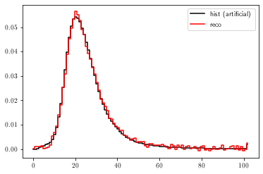
MSE: [2.39758838e-06]
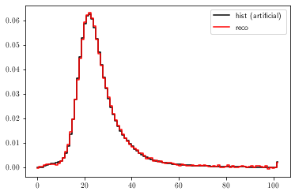
MSE: [5.69567167e-07]
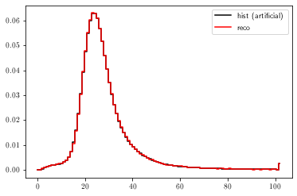
MSE: [9.56595139e-08]
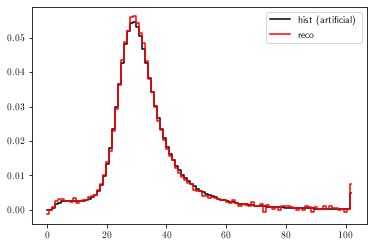
MSE: [2.41395981e-06]
MSE: [1.68067087e-06]
MSE: [1.14024023e-06]
MSE: [1.10999989e-06]